Shanghai Meta Network Technology Co., Ltd. was founded in April 2018 and is a cutting-edge technology company in the field of artificial intelligence. Currently, Meta Technology has millions of users, is headquartered in Xuhui District, Shanghai, at “Modu Space,” and has established research and development centers in Beijing and Chengdu. The company engages in research and development and product implementation in AI search, AI writing, legal translation, and other areas.Based on its own business characteristics and technological accumulation, the company independently developed the large language model MetaLLM.
Meta AI Search (metaso.cn) went online in mainland China in early 2024. It’s an AI search engine that deeply understands questions, without any ads, delivering straight results. It impressed a lot of Chinese scholars the day it came out for its perfectly organized knowledge structure with great accuracy in the academy. Currently, Meta AI Search is still in the development and testing phase of version 0.99. It is now completely free and open to the public.
This blog will give a basic introduction to MetaLLM and try to rate it.
This is the first page of the website. There are three modes people can choose: brief, thorough, and academic for answering questions.  The range of the search process can be the entire internet, academia, or podcasts. You can choose only using English or Chinese research library. Only English and Chinese are supported languages. You can also choose whether to use extensive reading or not.
The range of the search process can be the entire internet, academia, or podcasts. You can choose only using English or Chinese research library. Only English and Chinese are supported languages. You can also choose whether to use extensive reading or not.
I asked: ” Give me an introduction of Communications theory” in Academic mode.
Here is the answer: https://metaso.cn/s/jDUUtqz
The whole answer is separated to several parts: Literature review, Key bullets / Mind map, Incidents and timeline, Relevant people, and references.
The key bullets and structure of the answer is: > Foundations of Communication Theory >Dialogical-dialectical field Mutual relevance to practical lifeworlds Challenges and appeals to common beliefs about communication > Key Traditions in Communication Theory >Rhetorical: Focus on rhetoric and persuasion Semiotic: Emphasizes signs and symbols Phenomenological: Studies the experience of communication Cybernetic: Applies principles from control systems to communication Sociopsychological: Examines human behavior within social contexts Sociocultural: Analyzes cultural influences on communication Critical: Critiques societal norms and power dynamics in communication > Evolution of Communication Models > Traditional linear, interactive, and cyclical models challenged by new media technologies >Emergence of universal communication models becoming increasingly difficult due to technological advancements > Core Concepts in Communication Theory >The essence of information and its transmission processes The role of noise in effective communication Importance of context in interpreting messages > Applications of Communication Theory >Interpersonal communication: Understanding individual interactions within groups or organizations Organizational communication: Managing information flow within organizations for efficiency and effectiveness Intercultural communication: Addressing differences across cultures to foster understanding and cooperation > Future Directions in Communication Theory >Integration with digital platforms for enhanced connectivity and understanding Exploration of new media technologies impact on traditional communication models > Challenges and Critiques >Lack of a unified general theory despite its rich history and diverse applications Variability in theoretical approaches among scholars without clear consensus on core principles or goals
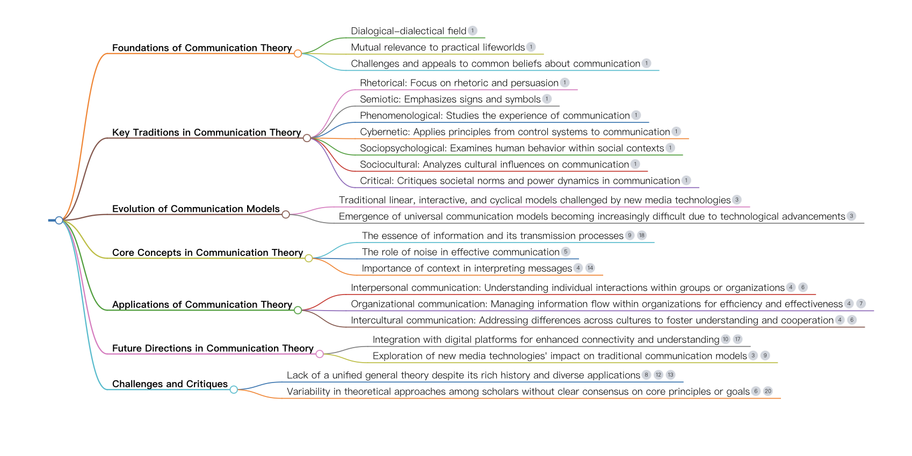 This is the mindmap with references.
Main text: > Communication theory encompasses a broad and diverse field that seeks to understand the processes, principles, and effects of communication across various contexts. This field has evolved significantly over time, incorporating insights from psychology, sociology, information science, and more, to develop a rich tapestry of theories and models aimed at explaining how messages are created, transmitted, received, and understood.
At its core, communication theory addresses the question of how information is conveyed between individuals or groups and how it is interpreted by those who receive it. This involves examining the roles of language, symbols, technology, and cultural norms in shaping communication processes 124. Theories within this field range from those focusing on the mechanics of message transmission, such as those based on cybernetics and information theory 59, to those that explore the social and psychological dimensions of communication, including interpersonal relationships, organizational behavior, and mass media effects 36.
One of the key challenges in communication theory is the recognition of the complexity and dynamism of communication processes. Traditional linear models of communication have been challenged by the advent of new media technologies and the increasing interactivity and feedback mechanisms they enable 3. This has led to the development of more sophisticated models that account for the bidirectional nature of communication and the role of context in shaping its outcomes 10.
The field of communication theory also reflects a diversity of theoretical approaches, including rhetorical, semiotic, phenomenological, cybernetic, sociopsychological, sociocultural, and critical traditions 1. Each of these traditions offers unique perspectives on communication, drawing on different disciplinary tools and frameworks to analyze communication phenomena. For example, the sociopsychological tradition emphasizes the role of individual psychology and social structures in shaping communication patterns 6, while the critical tradition focuses on the power dynamics and ideological underpinnings of communication practices 4.
Despite its broad scope and the richness of its theoretical contributions, communication theory as an identifiable field of study has faced challenges in achieving coherence and consensus among scholars 1. Theorists often operate within isolated domains or disciplinary specialties, leading to a fragmented landscape of communication theory that may not fully leverage the potential synergies among different traditions 1.
In recent years, there has been a push towards integrating diverse theoretical perspectives and developing a more unified understanding of communication processes. This includes efforts to clarify the conceptual foundations of communication theory, establish common goals and methodologies for research, and apply theoretical insights to address contemporary communication challenges 1315. As communication continues to evolve with technological advancements and changing social landscapes, the field of communication theory remains dynamic and open to new ideas and methodologies 16.
In summary, communication theory is a multifaceted field that seeks to understand the complex processes of message creation, transmission, reception, and interpretation. It draws on insights from a wide range of disciplines and theoretical traditions to explore the many dimensions of human communication. Despite its challenges in achieving unity and coherence, communication theory continues to grow and evolve, offering valuable insights into the nature of communication in all its forms.
Incidents
| Incident | Time | Basic information | |——|——|——| | Development of Communication Theory by Eric Berne | 1953 (for Eric Berne’s essay) | Academic/Scientific DevelopmentEric Berne developed innovative concepts in communication theory, including the value of noise and the importance of hidden messages. | | Publication of “Principles of Communication” | June 1984 (second edition) | Publication/Academic ResourceThe book “Principles of Communication” was published, focusing on foundational aspects of communication technology. | | Impact of Information Theory on Communication Studies | Mid-20th century onwards | Academic/Scientific DevelopmentInformation theory, along with cybernetics and systems theory, has significantly influenced the development of communication studies. | | Visit of American Scholar Xuan Weiwei to China for a Communication Theory Discussion | May last year (Year not specified) | International Exchange/Academic DiscussionAmerican scholar Xuan Weiwei visited China to discuss his contributions to communication theory, sparking interest among Chinese journalism scholars. |
Relevant people | name | brief introduction | |——–|——–| | Stephen M. Croucher, Diyako Rahmani, Melodine Sommier | Academics/ResearchersAuthors of works on various aspects of communication theory. | | Jansen B. Warner and Daniel Cronn-Mills | Academics/ResearchersResearchers who have contributed to the field of rhetorical theory. | | James P. Dimock and Kirsti K. Cole | Academics/ResearchersAuthors associated with critical cultural theory in communication studies. | | Eric Berne | Psychologist/SociologistDeveloped concepts such as the value of noise and the importance of hidden messages in communication theory. | | Jakobson | Linguist/AcademicMentioned for his work on the function of messages and the phatic function, which Berne anticipated. | | Fan Changxin |Academic/AuthorCo-author of “Principles of Communication” published by the National Defense Industry Press. | | Professor Braga | Academic/ResearcherIntroduced models for elementary analysis in communication theory. | | Gregory Bateson | Philosopher/SociologistHis communication theories were compared with Paul Watzlawick’s for their similarities and differences. | | Paul Watzlawick | Psychologist/AcademicHis communication theories were analyzed for parallels and differences with Bateson’s. | | Xuan Weibei | Academic/ResearcherA scholar from the United States who visited China and attracted attention to his communication theory. | | David Middleton | Author/AcademicAuthor of an encyclopedic book on information or communications theory. |
The most impressive part is that it can automatically generate a Powerpoint based on key bullets.
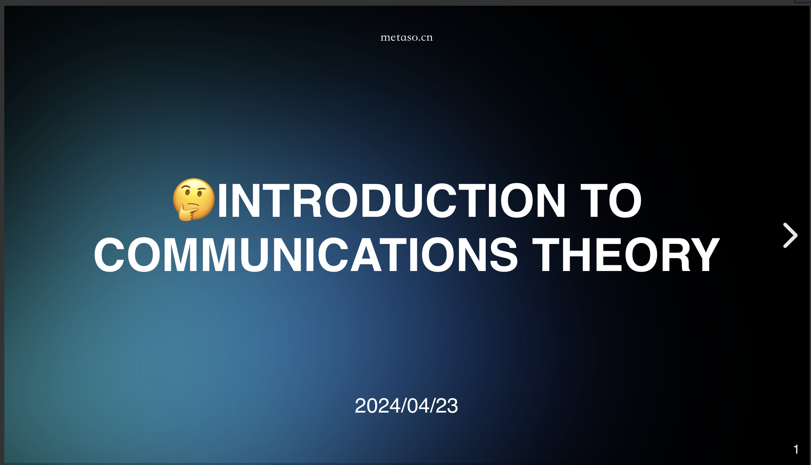
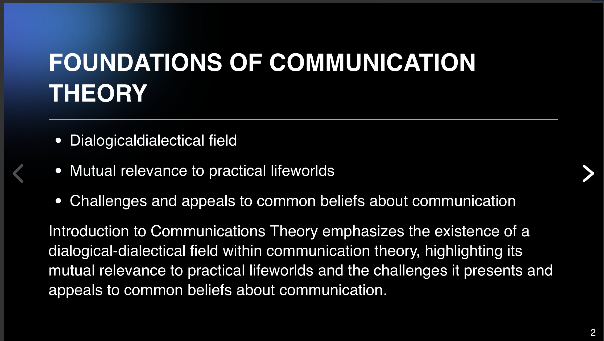
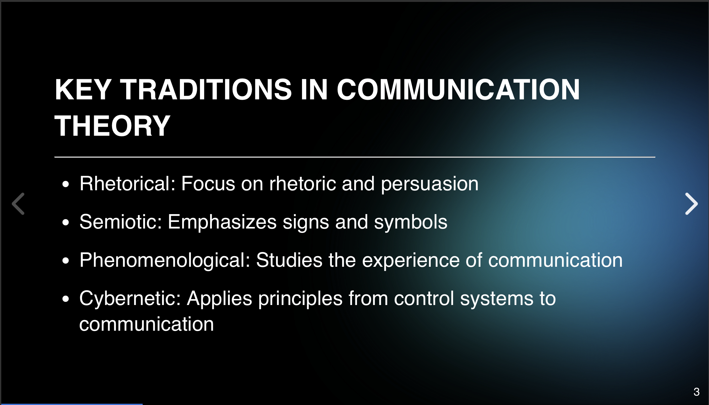
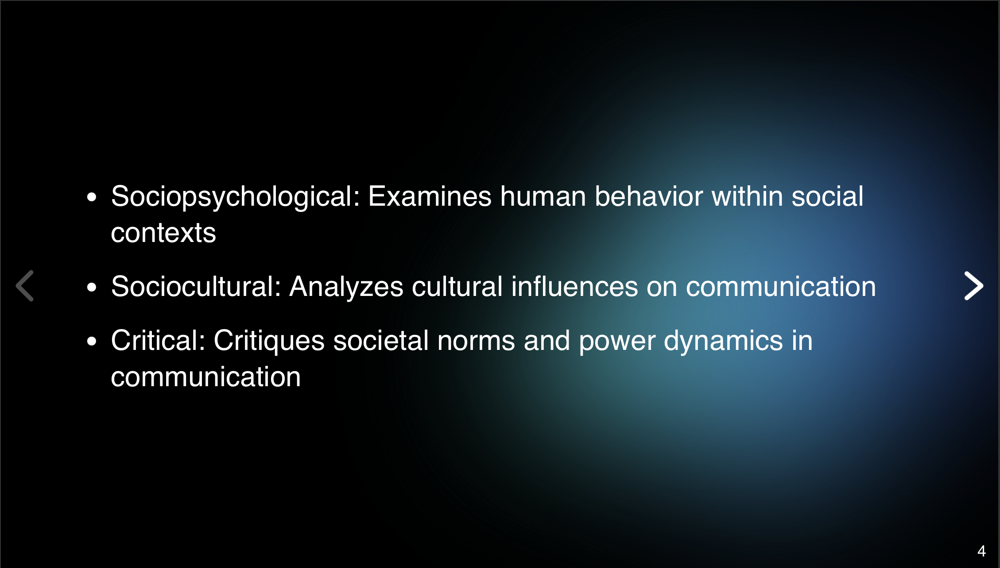
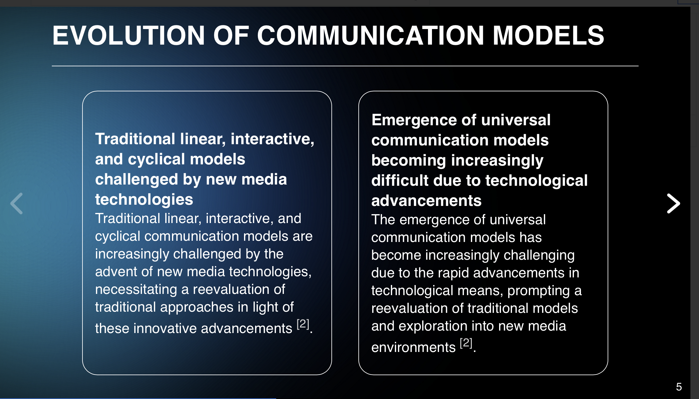
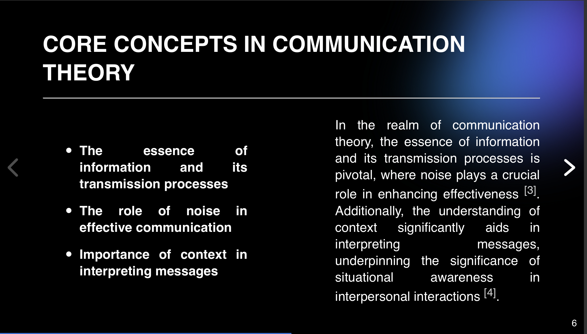
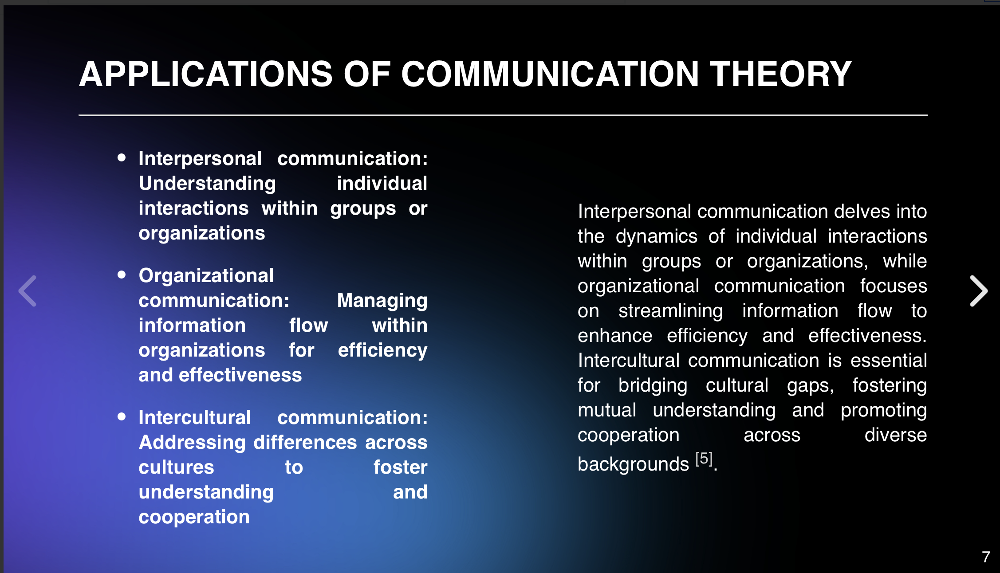
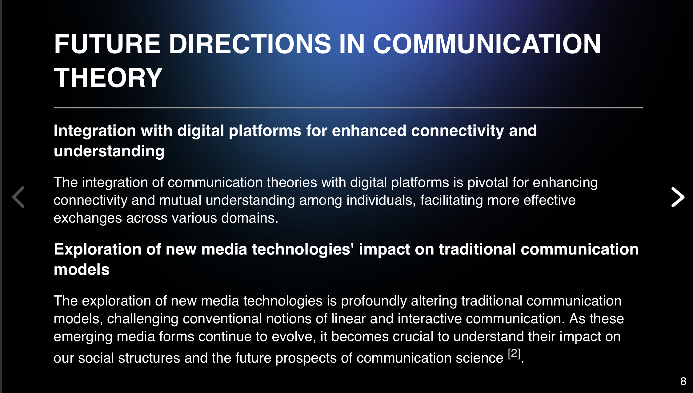
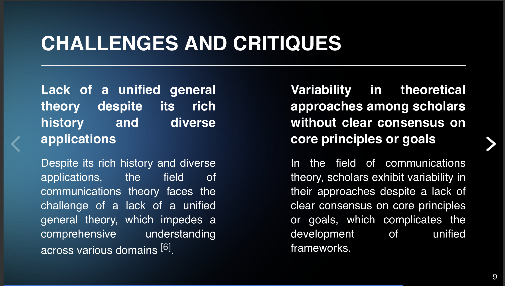
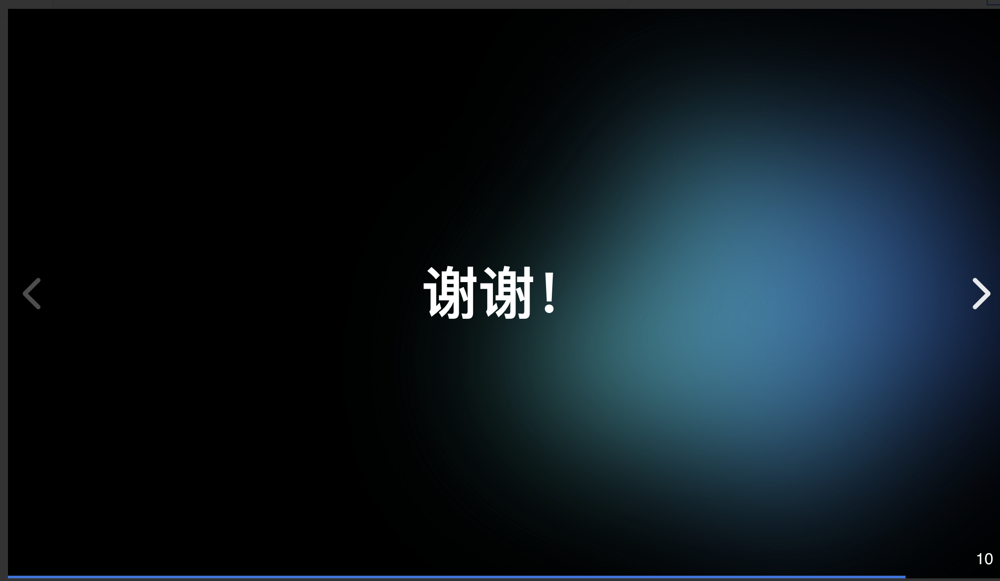
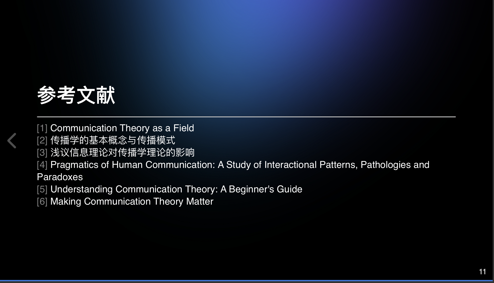
Interestingly, though chosen language as “English”, the default language of the generated slides is still Chinese.
After seeing the general display of the MetaLLM, let’s evaluate it compared to Claude and Wikipedia.
https://en.wikipedia.org/wiki/Communication_theory#:~:text=Communication%20is%20defined%20in%20both,exchange%20(the%20ritual%20perspective)
I quickly summarized this page with the help of Claude-3. > Key points:
Communication is defined in both informational and ritual perspectives:
- Informational perspective: Communication is the process of transmitting information from a source to a receiver.
- Ritual perspective: Communication is the process of sharing, exchanging, and negotiating meaning.
The informational perspective focuses on the efficient transmission of information, while the ritual perspective emphasizes the social and cultural aspects of communication as a process of sharing meaning. The article notes that these two perspectives are not mutually exclusive, but rather represent different traditions in defining and studying communication. The transmission perspective has been more influential historically and aligns with the popular understanding of communication as sending and receiving messages. The ritual perspective views communication as a process of sharing, participating, associating, and having a possession in common with others. It sees communication as a way to build and maintain communities.
Some core concepts in communication theory include: - Source - The entity that originates the message. - Encoder - Converts the message into signals. - Channel - The medium used to transmit the signals. - Decoder - Converts the received signals back into a message. - Receiver - The entity that receives the message. - Noise - Anything that interferes with the transmission or interpretation of the message.
Communication theory examines how these components interact to facilitate the exchange of information and meaning between communicators. It provides a framework for understanding the communication process.
Does this help summarize the key points about communication theory from the Wikipedia page you referenced? Let me know if you need any clarification or have additional questions.
Claude: > Communications theory is a field of study that examines the processes of human communication, including how information is transmitted, received, and interpreted. It explores various aspects of communication, such as verbal and nonverbal communication, interpersonal and mass communication, as well as the role of media and technology in communication processes.
The main principles and concepts of communications theory include: 1. Sender-Message-Channel-Receiver Model: This model describes the basic elements of communication, where the sender encodes a message, transmits it through a channel, and the receiver decodes the message. Noise can interfere with the transmission and reception of the message. 2. Semiotics: The study of signs and symbols and how they convey meaning in communication. It examines the relationship between the signifier (the form) and the signified (the concept). 3. Nonverbal Communication: The study of communication through non-linguistic means, such as body language, facial expressions, gestures, and tone of voice. 4. Interpersonal Communication: The study of communication between individuals, including dyadic (two-person) and small group communication. 5. Mass Communication: The study of communication through mass media channels, such as television, radio, newspapers, and the internet, and their influence on society. 6. Media Effects: The study of how media messages and content influence individuals’ attitudes, beliefs, and behaviors. 7. Persuasion and Rhetoric: The study of how language and communication are used to influence others’ attitudes and behaviors. 8. Intercultural Communication: The study of communication across different cultures, including the influence of cultural values, beliefs, and norms on communication processes.
Communications theory draws from various disciplines, including psychology, sociology, anthropology, linguistics, and media studies. It provides a framework for understanding and analyzing the complexities of human communication and its impact on individuals, groups, and society.
In general, it is still Wikipedia that has the soundest academic resource. But what makes MetaLLM stands out is its consistent logic and structure.